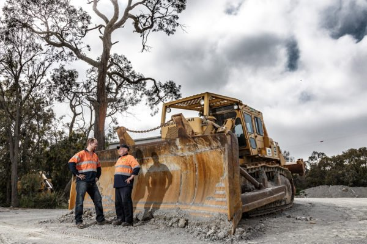

Our Work on the Toowoomba Second Range Crossing
The Toowoomba Second Range Crossing is the largest Australian Government funding commitment to a single road project in Queensland’s history. The $1.6 billion project is a 41km road bypass route to the north of Toowoomba. It connects the Warrego Highway at Helidon Spa in the east to the Gore Highway at Athol in the west via Charlton.
Over the last few years, EPH trucks, plant and services have been mobilised across the $1.6 billion Toowoomba Second Range Crossing project. Completed in September 2019, this project will see massive roadway improvements around Toowoomba, offering better connectivity and transport routes for the Darling Downs region of southern Queensland. EPH was heavily involved in the material haulage package of work for the project, where tandems, 8-wheelers, 10-wheelers, semi-tippers, ejector trucks and truck & dog combos were utilised.
This massive Nexus Infrastructure led project has been responsible for facilitating and constructing:
- An 800m-long viaduct built over an existing Queensland Rail rail line, connecting the Lockyer Valley and the Toowoomba Range escarpment.
- 4 new lanes (2 lanes each way) from the Warrego Highway’s eastern interchange at Helidon to the western interchange at Charlton.
- Grade-separated interchanges at Warrego Highway west, Toowoomba-Cecil Plains Road and Gore Highway.
- Grade-separated connections to Mort Street and Boundary Street.
- 30m-deep cutting at the top of the Toowoomba Range as an alternative to the tunnel solution as detailed in the reference design.
- Continuity of the New England Highway through a new bridge over the cutting.
According to the Department of Transport and Main Roads, the project will deliver an alternative crossing of the Toowoomba Range for all classes of heavy and super-heavy vehicles. Drivers will be able to avoid 18 sets of traffic lights via the bypass, which will remove around 22,000 vehicles from the CBD each day. This, in turn, is anticipated to improve freight efficiency and driver safety, relieve existing pressure on Toowoomba’s main roads, and improve liveability for residents in the City and throughout the greater Darling Downs region. Local participation in the Second Range Crossing ensured contracts went to local companies and has seen up 1800 direct and indirect jobs created during construction, operation and maintenance.
Statistics about the project:
Start Date: April 2016 End Date: September 2019 Cost: $1.6 billion split 80:20 between the Federal and State Governments.
Jobs: 1,300 direct jobs supported. Next project